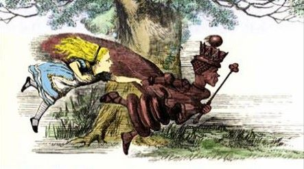
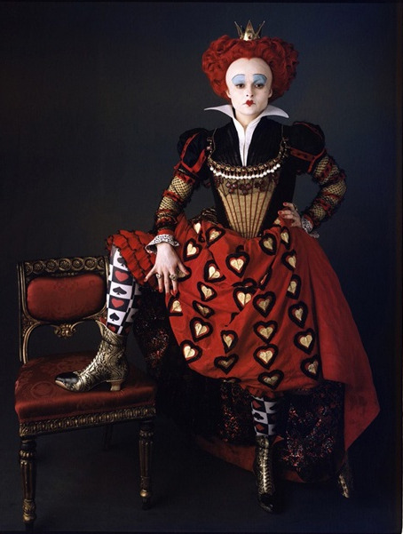

- Størstedelen av ditt miljø er andre aktører.
- Når alle aktørene beveger seg, må du også bevege deg for å beholde din posisjon.
- Når alle aktørene endrer seg raskere og raskere, må du gjøre det samme.
- Det miljøet du er tilpasset, optimalisert for og posisjonert for, er til enhver tid gårsdagens miljø.
https://en.wikipedia.org/wiki/Red_Queen%27s_Hypothesis
https://en.wikipedia.org/wiki/Red_Queen%27s_race